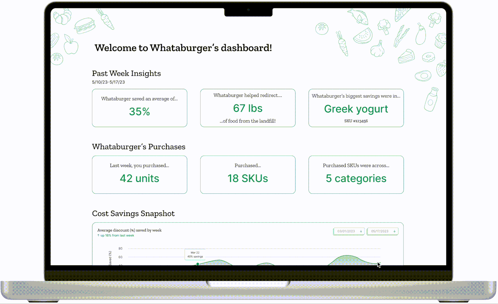
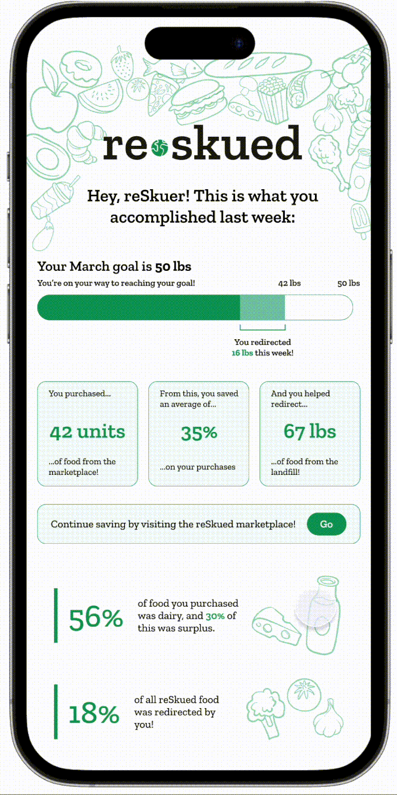

Turning distributor surplus into savings
IMPACT
Customer acquisition
Drove customer acquisition by sourcing over 100 contacts and converted 15 into ReSkuers, resulting in a 15% conversion rate.
Experience design
Designed web and mobile experiences targeting 3 key retention drivers: cost savings, climate impact, and purchasing trends.
CONTEXT
“I’ve got too much!”
ReSkued was a startup backed by Cargill and Google that focused on mitigating distributor-level food waste via an online marketplace that allows customers to purchase food surplus at a discounted rate.
I was tasked with mapping out the customer experience, conducting customer acquisition for the test pilot in February 2023, and designing an experience to maintain customer engagement with the platform.
PROBLEM
10.6 million tons ($34.8 billion) of food are wasted per year by distributors and manufacturers.
SOLUTION 01
Web dashboard

SOLUTION 02
Mobile newsletter

STRATEGY / FRAMING THE VALUE PROPOSITIONS
People care about saving money, saving the planet, and helping their communities.
I began by looking at various potential customer segments in the ATX area ranging from meal-kit subscriptions to private chefs. I mapped these segment types to their values and determined three main value propositions:
01 Sustainability-focused
02 Cost-conscious
03 Donation-driven
STRATEGY / MAPPING THE CUSTOMER JOURNEY
Marketplace uncertainty was the main friction point during the test-pilot phase.
Customers might be left wondering: What foods are going to end up on the ReSkued marketplace this week? How much will I be able to save? How is this marketplace benefitting my business?
Awareness and interest
Express intent to participate
Onboarding
During test-pilot
Post test-pilot
STRATEGY / DESIGN
Leveraging the value propositions and customer journey, I designed a solution focused on customer engagement and retention.
I focused on creating zones to organize various sections of the dashboard, ultimately helping me prioritize content that will help empower and inform our customers. The web dashboard experience promotes deeper engagement and the mobile newsletter provides at-a-glance insights.
Key performance indicators help customers understand their biggest cost-savings and purchasing trends
Customers can dive deeper with a more granular view of their savings.
Visualizing individual and community climate impact helps customers feel empowered and accountable.
Inventory tracking helps customers monitor upcoming expirations for foods purchased from the marketplace.
The newsletter prioritizes glanceable, on-the-go insights to keep customers informed and energized.